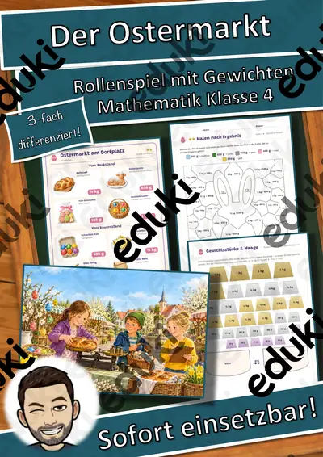
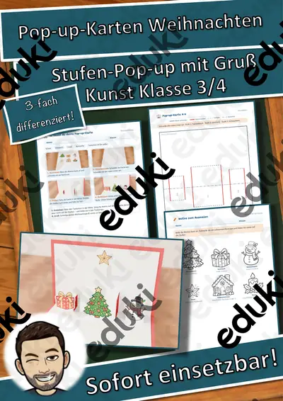
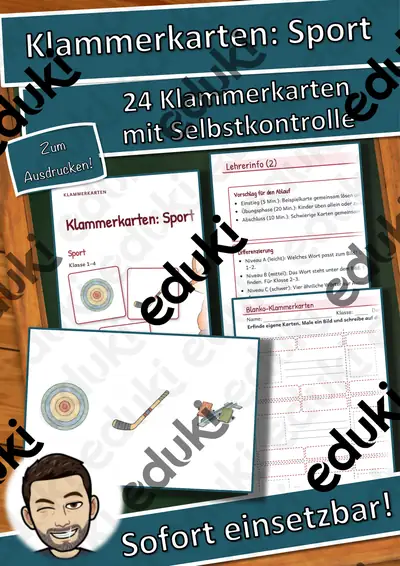
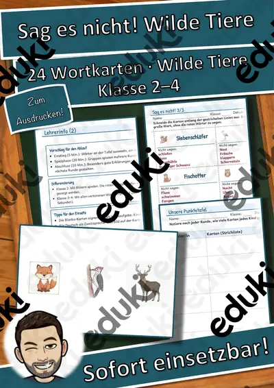
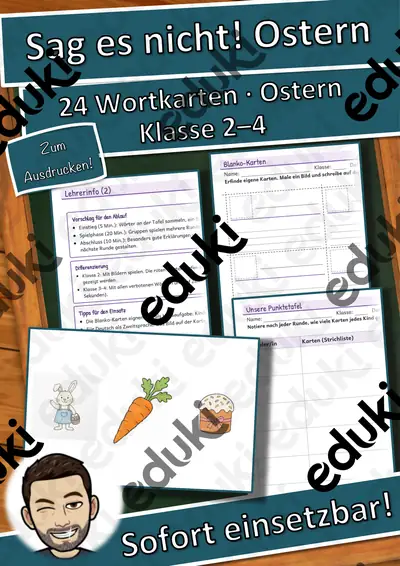

Lesespaziergang Materialpaket: 3 Geschichten, 6-fach differenziert – Herbst, Advent, Winter (Klasse 1–4, DaZ)

Lesespaziergang Vögel am Futterhaus – 6-fach differenziert mit Bildkarten, Sternchenaufgaben und Audio (Klasse 1–4)

Lesespaziergang Auf dem Weihnachtsmarkt – 6-fach differenziert mit Bildkarten, Sternchenaufgaben und Audio (Klasse 1–4)

Lesespaziergang Ein Nebeltag im November – 6-fach differenziert mit Bildkarten, Sternchenaufgaben und Audio (Klasse 1–4)

3D-Anhänger Schulanfang – Oktaeder, Diamant und Kugel zum Ausmalen und Basteln, 3-fach differenziert (Klasse 3/4)

3D-Anhänger Sommer – Oktaeder, Diamant und Kugel zum Ausmalen und Basteln, 3-fach differenziert (Klasse 3/4)

3D-Anhänger Ostern – Oktaeder, Diamant und Kugel zum Ausmalen und Basteln, 3-fach differenziert (Klasse 3/4)

3D-Anhänger Fasching – Oktaeder, Diamant und Kugel zum Ausmalen und Basteln, 3-fach differenziert (Klasse 3/4)

3D-Anhänger Frühling – Oktaeder, Diamant und Kugel zum Ausmalen und Basteln, 3-fach differenziert (Klasse 3/4)

3D-Anhänger Herzen und Muttertag – Oktaeder, Diamant und Kugel zum Ausmalen und Basteln, 3-fach differenziert (Klasse 3/4)

Der Ostermarkt – Rollenspiel Gewichte mit Brüchen ½ ¼ ¾ kg, 3-fach differenziert (Klasse 4)

Lesespaziergang DaZ: Wir backen – Wortschatz mit Rätseln, 3-fach differenziert (Klasse 1–4)

Lesespaziergang DaZ: Spielen im Schnee – Wortschatz mit Rätseln, 3-fach differenziert (Klasse 1–4)

Lesespaziergang DaZ: Gemüse – Wortschatz mit Rätseln, 3-fach differenziert (Klasse 1–4)

Lesespaziergang DaZ: Sankt Martin – Wortschatz mit Rätseln, 3-fach differenziert (Klasse 1–4)

3D-Anhänger Herbst – Oktaeder, Diamant und Kugel zum Ausmalen und Basteln, 3-fach differenziert (Klasse 3/4)

Materialpaket Rechenwelten im Winter für die 4. Klasse: 5 Mathe-Rollenspiele, 3-fach differenziert (Wintertombola, Schneeburg, Paketstation & mehr)

Materialpaket Winter und Advent für die 4. Klasse: 5 Lesespurgeschichten mit Rätselaufgaben (Weihnachtsmarkt, Fröbelsterne, Sternbilder & mehr)

Das Reisebüro: Winterreise in die Berge – Rollenspiel Maßstab, Kilometer und Meter, 3-fach differenziert (Klasse 4)

3D-Anhänger Winter – Oktaeder, Diamant und Kugel zum Ausmalen und Basteln, 3-fach differenziert (Klasse 3/4)

3D-Anhänger Advent – Oktaeder, Diamant und Kugel zum Ausmalen und Basteln, 3-fach differenziert (Klasse 3/4)

Halloween Wackel-Skelett – Bastelvorlage, Sachtext Skelett und Knochen beschriften, 3-fach differenziert (Klasse 3/4)

3D-Zauberbild Lebensraum Wald – Umkehrperspektive basteln, Sachtext und Forscherauftrag, 3-fach differenziert (Klasse 3/4)

Klapp-Spukhaus zu Halloween – Bastelvorlage mit Schreibanlass und Wortspeicher, 3-fach differenziert (Klasse 3/4)

Halloween-Kegelfiguren – Körper Kegel basteln und erforschen, 3-fach differenziert (Mathematik/Kunst Klasse 3/4)

Pop-up-Karten Weihnachten – Bastelvorlage mit Stufen-Pop-up, Motiven und Weihnachtsgruß, 3-fach differenziert (Klasse 3/4)

Wimpelkette Winter – Bastelvorlage mit Wintermotiven, Buchstaben WINTER und eigenen Wimpeln, 3-fach differenziert (Klasse 1–4)

Advents-Häuserstadt – Klassen-Adventskalender zum Basteln mit 24 Adventsaufgaben, 3-fach differenziert (Klasse 1–4)
3D-Anhänger Halloween – Oktaeder, Diamant und Kugel zum Ausmalen und Basteln, 3-fach differenziert (Klasse 3/4)

Lesespaziergang DaZ: Im Klassenzimmer – Wortschatz mit Rätseln, 3-fach differenziert (Klasse 1–4)
Die Kinderpunsch-Bar – Rollenspiel Brüche in Größen: ½ l, ¼ l, ¾ l und Milliliter, 3-fach differenziert (Klasse 4)

Das Schneeburg-Baubüro – Rollenspiel Würfelbauten, Baupläne und Rauminhalt, 3-fach differenziert (Klasse 4)

Das Glücksrad der Wintertombola – Rollenspiel Gewinnchancen und Wahrscheinlichkeit, 3-fach differenziert (Klasse 4)

Der Wintersporttag – Rollenspiel Sekunden, Minuten und Sekunden umwandeln, Rangliste, 3-fach differenziert (Klasse 4)

Der Hofladen im Winter – Rollenspiel Hohlmaße l und ml, 3-fach differenziert (Klasse 4)

Lesespaziergang: Frühblüher im Garten und im Wald – 3-fach differenziert (★/★★/★★★), Klasse 2–4

Lesespaziergang: Verkleiden und Feiern im Fasching – 3-fach differenziert (★/★★/★★★), Klasse 2–4

Lesespaziergang: Tiere in Eis und Wüste – 3-fach differenziert (★/★★/★★★), Klasse 2–4

Lesespaziergang: Obst und Gemüse im Winter – 3-fach differenziert (★/★★/★★★), Klasse 2–4

Das große Kürbisfest – Rollenspiel schriftliche Multiplikation und Überschlag, 3-fach differenziert (Klasse 4)

Lesespaziergang: Spuren im Schnee – 3-fach differenziert (★/★★/★★★), Klasse 2–4

Lesespaziergang: Plätzchen backen im Advent – 3-fach differenziert (★/★★/★★★), Klasse 2–4

Lesespaziergang: Zugvögel im Herbst – 3-fach differenziert (★/★★/★★★), Klasse 2–4

Lesespaziergang: Blätter und Bäume im Herbst – 3-fach differenziert (★/★★/★★★), Klasse 2–4

Paketstation im Advent – Rollenspiel Gewichte kg, g und t, Malnehmen mit Größen, 3-fach differenziert (Klasse 4)

Lesespaziergang: Vorräte der Tiere im Herbst – 3-fach differenziert (★/★★/★★★), Klasse 2–4

Lesespaziergang: Tiere im Winterwald – 3-fach differenziert (★/★★/★★★), Klasse 2–4

Lesespaziergang: Igel im Herbst – 3-fach differenziert (★/★★/★★★), Klasse 2–4

Lesespaziergang: Halloween-Nacht im Kürbisgarten – 3-fach differenziert (★/★★/★★★), Klasse 2–4

Rechnen im Winter-Café – Rollenspiel Rechnen mit Geld, 3-fach differenziert (Klasse 2–4)

Ramadan und Zuckerfest – Lesespurgeschichte mit Rätselaufgaben (Klasse 4)

Fasching, Fastnacht und Karneval – Bräuche in der närrischen Zeit – Lesespurgeschichte mit Rätselaufgaben (Klasse 4)

Sternbilder am Winterhimmel – Orion, Großer Wagen und Polarstern – Lesespurgeschichte mit Rätselaufgaben (Klasse 4)

Verkehrsschilder – Formen, Farben, Bedeutungen – Lesespurgeschichte mit Rätselaufgaben (Klasse 4)

Elisabeth von Thüringen – Brot, Rosen, Nächstenliebe – Lesespurgeschichte mit Rätselaufgaben (Klasse 4)

Fröbelsterne und Papiersterne falten – Lesespurgeschichte mit Rätselaufgaben (Klasse 4)

Die Radfahrprüfung – Vorfahrt, Verkehrszeichen, sicheres Abbiegen – Lesespurgeschichte mit Rätselaufgaben (Klasse 4)

Die Samenreise – wie Pflanzen ihre Früchte verbreiten – Lesespurgeschichte mit Rätselaufgaben (Klasse 4)

Mut zeigen und über sich hinauswachsen – Lesespurgeschichte mit Rätselaufgaben (Klasse 4)

Gotteshäuser der Weltreligionen – Lesespurgeschichte mit Rätselaufgaben (Klasse 4)

Die Werft – Lesespurgeschichte mit Rätselaufgaben (Klasse 4)

Die Seenotrettungsstation – Lesespurgeschichte mit Rätselaufgaben (Klasse 4)

Die Eishalle – Lesespurgeschichte mit Rätselaufgaben (Klasse 4)

Das Aquarium – Lesespurgeschichte mit Rätselaufgaben (Klasse 4)

Die Kletterhalle – Lesespurgeschichte mit Rätselaufgaben (Klasse 4)

Die Fischzucht – Lesespurgeschichte mit Rätselaufgaben (Klasse 4)

Das Sägewerk – Lesespurgeschichte mit Rätselaufgaben (Klasse 4)

Die Nachtwanderung – Lesespurgeschichte mit Rätselaufgaben (Klasse 4)

Die Korbflechterei – Lesespurgeschichte mit Rätselaufgaben (Klasse 4)

Das Segelboot – Lesespurgeschichte mit Rätselaufgaben (Klasse 4)

Die Vogelbeobachtung – Lesespurgeschichte mit Rätselaufgaben (Klasse 4)

Die Sternwarte – Lesespurgeschichte mit Rätselaufgaben (Klasse 4)

Der Campingplatz – Lesespurgeschichte mit Rätselaufgaben (Klasse 4)

Das Fahrrad – Lesespurgeschichte mit Rätselaufgaben (Klasse 4)

Der Schmetterling – Lesespurgeschichte mit Rätselaufgaben (Klasse 4)

Der Marienkäfer – Lesespurgeschichte mit Rätselaufgaben (Klasse 4)

Die Spielzeugwerkstatt – Lesespurgeschichte mit Rätselaufgaben (Klasse 4)

Die Buchbinderei – Lesespurgeschichte mit Rätselaufgaben (Klasse 4)

Die Mosterei – Lesespurgeschichte mit Rätselaufgaben (Klasse 4)

Die Uhrmacherei – Lesespurgeschichte mit Rätselaufgaben (Klasse 4)

Die Seilerei – Lesespurgeschichte mit Rätselaufgaben (Klasse 4)

Die Hutmacherei – Lesespurgeschichte mit Rätselaufgaben (Klasse 4)

Die Ziegelei – Lesespurgeschichte mit Rätselaufgaben (Klasse 4)

Die Weberei – Lesespurgeschichte mit Rätselaufgaben (Klasse 4)

Die Glasbläserei – Lesespurgeschichte mit Rätselaufgaben (Klasse 4)

Die Schmiede – Lesespurgeschichte mit Rätselaufgaben (Klasse 4)

Die Imkerei – Lesespurgeschichte mit Rätselaufgaben (Klasse 4)

Die Fischerei – Lesespurgeschichte mit Rätselaufgaben (Klasse 4)

Die Töpferei – Lesespurgeschichte mit Rätselaufgaben (Klasse 4)

Der Obsthof – Lesespurgeschichte mit Rätselaufgaben (Klasse 4)

Die Mühle – Lesespurgeschichte mit Rätselaufgaben (Klasse 4)

Der Weihnachtsmarkt – Lesespurgeschichte mit Rätselaufgaben (Klasse 4)

Die Wüste – Lesespurgeschichte mit Rätselaufgaben (Klasse 4)

Der Nordpol – Lesespurgeschichte mit Rätselaufgaben (Klasse 4)

Die Tankstelle – Lesespurgeschichte mit Rätselaufgaben (Klasse 4)

Gruselgeschichten schreiben: Schreibwerkstatt mit Hilfen

Wichtel beschreiben: Schreibanlass mit 4 Wichtelbildern, Wortspeicher und Checkliste (Klasse 3–4)

Aaskrähe Lückentext mit Wortspeicher Hörverstehen und Suchsel

Artemis - Griechische Götter - Lückentext mit Wortspeicher

Materialpaket Griechische Götter - Lückentexte mit Wortspeicher, Plakate und Ausmalbilder

Zeus - Griechische Götter - Lückentext mit Wortspeicher

Hermes - Griechische Götter - Lückentext mit Wortspeicher

Demeter - Griechische Götter - Lückentext mit Wortspeicher

Apollo - Griechische Götter - Lückentext mit Wortspeicher

Valentinstag Lückentext mit Wortspeicher

Verb to be: Arbeitsblaetter-Paket mit Loesungen

Verb to be: Flipbook am, is, are

Ich habe, wer hat? Hobbys – Lese-Schleifen – Klasse 1–4

Halloween Activity Booklet Englisch

Experimentierkartei Sachunterricht: 40 Versuche

Länder-Reisepass: Steckbriefe für Europa und die Welt

Wortgitter-Suchsel: Ritter und Burg – Wortgitter – Klasse 1–4

Wortgitter-Suchsel: Dinosaurier – Wortgitter – Klasse 1–4

Wortgitter-Suchsel: Weltall – Wortgitter – Klasse 1–4

Wortgitter-Suchsel: Am Meer – Wortgitter – Klasse 1–4

Wortgitter-Suchsel: Wetter – Wortgitter – Klasse 1–4

Wortgitter-Suchsel: Fahrzeuge – Wortgitter – Klasse 1–4

Wortgitter-Suchsel: Piraten – Wortgitter – Klasse 1–4

Wortgitter-Suchsel: Sport – Wortgitter – Klasse 1–4

Wortgitter-Suchsel: Ostern – Wortgitter – Klasse 1–4

Himmel und Hölle: Haustiere – Himmel und Hölle – Klasse 1–4

Wort-Bild-Karten: Ritter und Burg – Wort-Bild-Karten – Klasse 1–4

Wort-Bild-Karten: Dinosaurier – Wort-Bild-Karten – Klasse 1–4

Lesen, Malen und Kleben: Familie – Lesen und Malen – Klasse 1–4

Wort-Bild-Karten: Weltall – Wort-Bild-Karten – Klasse 1–4

Lesen, Malen und Kleben: Fahrzeuge – Lesen und Malen – Klasse 1–4

Sprechanlässe: Im Restaurant – Sprechanlässe – Klasse 1–4

Sprechanlässe: Hobbys – Sprechanlässe – Klasse 1–4

Sprechanlässe: Familie – Sprechanlässe – Klasse 1–4

Sprechanlässe: Wilde Tiere – Sprechanlässe – Klasse 1–4

Sprechanlässe: Fahrzeuge – Sprechanlässe – Klasse 1–4

Ich habe, wer hat? Ritter und Burg – Lese-Schleifen – Klasse 1–4

Ich habe, wer hat? Dinosaurier – Lese-Schleifen – Klasse 1–4

Lesen, Malen und Kleben: Wilde Tiere – Lesen und Malen – Klasse 1–4

Wortspiele: Sag es nicht! Weltall – Klasse 2–4

Wortspiele: Sag es nicht! Dinosaurier – Klasse 2–4

Wortgitter-Suchsel: Sommer – Wortgitter – Klasse 1–4

Klammerkarten: Haustiere – Klammerkarten – Klasse 1–4

Wort-Bild-Karten: Am Meer – Wort-Bild-Karten – Klasse 1–4

Lesen, Malen und Kleben: Kleidung – Lesen und Malen – Klasse 1–4

Sprechanlässe: Im Zoo – Sprechanlässe – Klasse 1–4

Ich habe, wer hat? Am Meer – Lese-Schleifen – Klasse 1–4

Wortspiele: Sag es nicht! Am Meer – Klasse 2–4

Himmel und Hölle: Sport – Himmel und Hölle – Klasse 1–4

Lesen, Malen und Kleben: Im Zoo – Lesen und Malen – Klasse 1–4

Sprechanlässe: Kleidung – Sprechanlässe – Klasse 1–4

Sprechanlässe: Ostern – Sprechanlässe – Klasse 1–4

Ich habe, wer hat? Wetter – Lese-Schleifen – Klasse 1–4

Wortspiele: Sag es nicht! Wetter – Klasse 2–4

Wortspiele: Sag es nicht! Ritter und Burg – Klasse 2–4

Lesen, Malen und Kleben: Im Restaurant – Lesen und Malen – Klasse 1–4

Lesen, Malen und Kleben: Ostern – Lesen und Malen – Klasse 1–4

Sprechanlässe: Frühling – Sprechanlässe – Klasse 1–4

Ich habe, wer hat? Fahrzeuge – Lese-Schleifen – Klasse 1–4

Wortspiele: Sag es nicht! Fahrzeuge – Klasse 2–4

Wortspiele: Sag es nicht! Familie – Klasse 2–4

Wortgitter-Suchsel: Familie – Wortgitter – Klasse 1–4

Himmel und Hölle: Körper und Sinne – Himmel und Hölle – Klasse 1–4

Klammerkarten: Körper und Sinne – Klammerkarten – Klasse 1–4

Wort-Bild-Karten: Fahrzeuge – Wort-Bild-Karten – Klasse 1–4

Wort-Bild-Karten: Familie – Wort-Bild-Karten – Klasse 1–4

Lesen, Malen und Kleben: Frühling – Lesen und Malen – Klasse 1–4

Sprechanlässe: Sommer – Sprechanlässe – Klasse 1–4

Sprechanlässe: Wetter – Sprechanlässe – Klasse 1–4

Memory: Ritter und Burg – Bild-Wort-Spiele – Klasse 1–4

Ich habe, wer hat? Familie – Lese-Schleifen – Klasse 1–4

Wortspiele: Sag es nicht! Im Zoo – Klasse 2–4

Wortgitter-Suchsel: Im Zoo – Wortgitter – Klasse 1–4

Wortgitter-Suchsel: Wilde Tiere – Wortgitter – Klasse 1–4

Himmel und Hölle: Märchen – Himmel und Hölle – Klasse 1–4

Wort-Bild-Karten: Im Zoo – Wort-Bild-Karten – Klasse 1–4

Lesen, Malen und Kleben: Sommer – Lesen und Malen – Klasse 1–4

Sprechanlässe: Bienen – Sprechanlässe – Klasse 1–4

Domino: Ritter und Burg – Bild-Wort-Spiele – Klasse 1–4

Ich habe, wer hat? Im Zoo – Lese-Schleifen – Klasse 1–4

Wortspiele: Sag es nicht! Wilde Tiere – Klasse 2–4

Klammerkarten: Märchen – Klammerkarten – Klasse 1–4

Wort-Bild-Karten: Wilde Tiere – Wort-Bild-Karten – Klasse 1–4

Lesen, Malen und Kleben: Bienen – Lesen und Malen – Klasse 1–4

Sprechanlässe: Kochen und Backen – Sprechanlässe – Klasse 1–4

Ich habe, wer hat? Wilde Tiere – Lese-Schleifen – Klasse 1–4

Wortspiele: Sag es nicht! Bienen – Klasse 2–4

Fair Play und Spielregeln: Stationenlernen Sport

Wortgitter-Suchsel: Bienen – Wortgitter – Klasse 1–4

Himmel und Hölle: Zirkus – Himmel und Hölle – Klasse 1–4

Wort-Bild-Karten: Bienen – Wort-Bild-Karten – Klasse 1–4

Lesen, Malen und Kleben: Kochen und Backen – Lesen und Malen – Klasse 1–4

Sprechanlässe: Obst und Gemüse – Sprechanlässe – Klasse 1–4

Memory: Dinosaurier – Bild-Wort-Spiele – Klasse 1–4

Ich habe, wer hat? Bienen – Lese-Schleifen – Klasse 1–4

Wortspiele: Sag es nicht! Piraten – Klasse 2–4

Lesen, Malen und Kleben: Wetter – Lesen und Malen – Klasse 1–4

Wortgitter-Suchsel: Körper und Sinne – Wortgitter – Klasse 1–4

Wort-Bild-Karten: Piraten – Wort-Bild-Karten – Klasse 1–4

Lesen, Malen und Kleben: Obst und Gemüse – Lesen und Malen – Klasse 1–4

Sprechanlässe: Im Garten – Sprechanlässe – Klasse 1–4

Domino: Dinosaurier – Bild-Wort-Spiele – Klasse 1–4

Ich habe, wer hat? Piraten – Lese-Schleifen – Klasse 1–4

Wortspiele: Sag es nicht! Körper und Sinne – Klasse 2–4

Klammerkarten: Zirkus – Klammerkarten – Klasse 1–4

Wort-Bild-Karten: Körper und Sinne – Wort-Bild-Karten – Klasse 1–4

Sprechanlässe: Berufe – Sprechanlässe – Klasse 1–4

Memory: Weltall – Bild-Wort-Spiele – Klasse 1–4

Ich habe, wer hat? Körper und Sinne – Lese-Schleifen – Klasse 1–4

Wortspiele: Sag es nicht! Ostern – Klasse 2–4

Wortgitter-Suchsel: Frühling – Wortgitter – Klasse 1–4

Himmel und Hölle: Weltall – Himmel und Hölle – Klasse 1–4

Wort-Bild-Karten: Sport – Wort-Bild-Karten – Klasse 1–4

Lesen, Malen und Kleben: Im Garten – Lesen und Malen – Klasse 1–4

Sprechanlässe: Ritter und Burg – Sprechanlässe – Klasse 1–4

Domino: Weltall – Bild-Wort-Spiele – Klasse 1–4

Memory: Am Meer – Bild-Wort-Spiele – Klasse 1–4

Ich habe, wer hat? Sport – Lese-Schleifen – Klasse 1–4

Wortspiele: Sag es nicht! Kleidung – Klasse 2–4

Wörtliche Rede sicher beherrschen

Klammerkarten: Weltall – Klammerkarten – Klasse 1–4

Wort-Bild-Karten: Ostern – Wort-Bild-Karten – Klasse 1–4

Lesen, Malen und Kleben: Berufe – Lesen und Malen – Klasse 1–4

Sprechanlässe: Dinosaurier – Sprechanlässe – Klasse 1–4

Domino: Am Meer – Bild-Wort-Spiele – Klasse 1–4

Ich habe, wer hat? Ostern – Lese-Schleifen – Klasse 1–4

Wortgitter-Suchsel: Bauernhof – Wortgitter – Klasse 1–4

Himmel und Hölle: Ritter und Burg – Himmel und Hölle – Klasse 1–4

Wort-Bild-Karten: Frühling – Wort-Bild-Karten – Klasse 1–4

Wort-Bild-Karten: Sommer – Wort-Bild-Karten – Klasse 1–4

Lesen, Malen und Kleben: Haustiere – Lesen und Malen – Klasse 1–4

Sprechanlässe: Weltall – Sprechanlässe – Klasse 1–4

Memory: Piraten – Bild-Wort-Spiele – Klasse 1–4

Ich habe, wer hat? Frühling – Lese-Schleifen – Klasse 1–4

Ich habe, wer hat? Sommer – Lese-Schleifen – Klasse 1–4

Wortgitter-Suchsel: Hobbys – Wortgitter – Klasse 1–4

Wortgitter-Suchsel: Kleidung – Wortgitter – Klasse 1–4

Wort-Bild-Karten: Kleidung – Wort-Bild-Karten – Klasse 1–4

Lesen, Malen und Kleben: Sport – Lesen und Malen – Klasse 1–4

Ich habe, wer hat? Bauernhof – Lese-Schleifen – Klasse 1–4

Wortspiele: Sag es nicht! Berufe – Klasse 2–4

Domino: Piraten – Bild-Wort-Spiele – Klasse 1–4

Winterzeit-Spiele: Winter-Domino: Die Bild-Wort-Kette – Klasse 1–4

Wortgitter-Suchsel: Im Restaurant – Wortgitter – Klasse 1–4

Sprechanlässe: Herbst – Sprechanlässe – Klasse 1–4
Keine Materialien gefunden – versuch einen anderen Suchbegriff oder Filter.